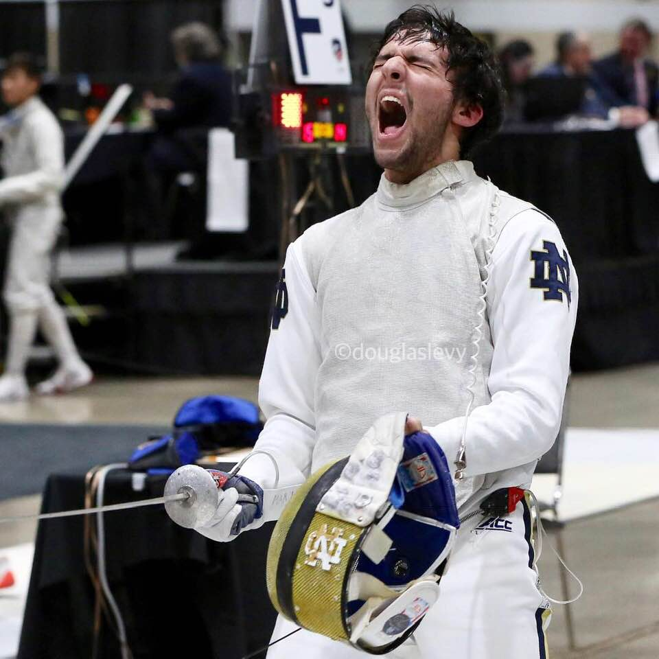
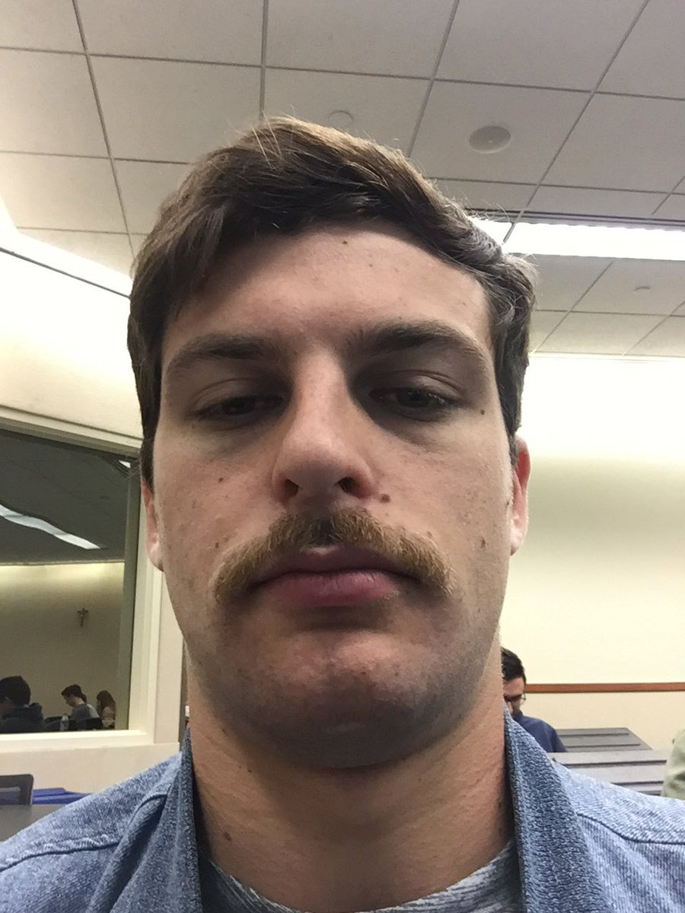
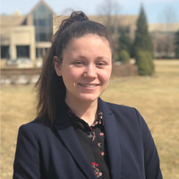

As one of the co-founders of Volcano Island, Joseph was often seen battling (like below) for the honor and dignity of an idea rooted in perfection: Volcano Island
As the second co-founder of Volcano Island, Ariel was the "man with a plan." If it is not blatantly obvious from his business-ready demeanor (seen below), let us assure you that he is always down to clown.
As the third co-founder of Volcano Island, Dariya was.... wait who are we kidding? She wasn't a founder! BUT, she is mayhaps the best intern around. Dariya comes equipped with every skill known to be useful on our island! If you have any questions, please reach out to her. dyefremeINTERN@volcanoisland.com
Please click here to find our rival city. Oh boy do we hope we do better than them this time!